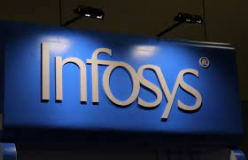

Infosys CEO:-Salil Parekh,
Infosys Limited is an Indian multinational information technology company,
that provides business consulting, information technology and outsourcing
services.The company was founded in Pune and is headquartered in Bangalore.[5]
Infosys is the second-largest Indian IT company after Tata Consultancy Services
by 2020 revenue figures and the 602nd largest public company in the world
according to Forbes Global 2000 ranking.[6] The credit rating of the company
is CRISIL AAA / Stable / CRISIL A1+ (rating by CRISIL).[7]Infosys was founded
by seven engineers in Pune, Maharashtra, India with an initial capital of $250
in 1981.[10] It was registered as Infosys Consultants Private Limited on
2 July 1981.[11] In 1983, it relocated its office to Bangalore, Karnataka,
India.